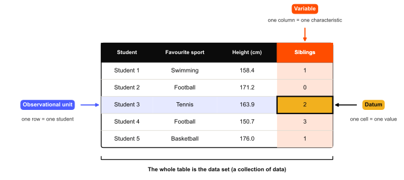
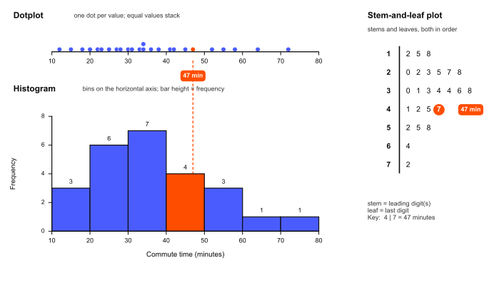
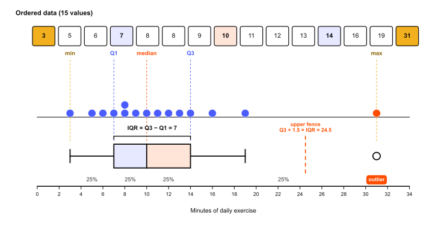
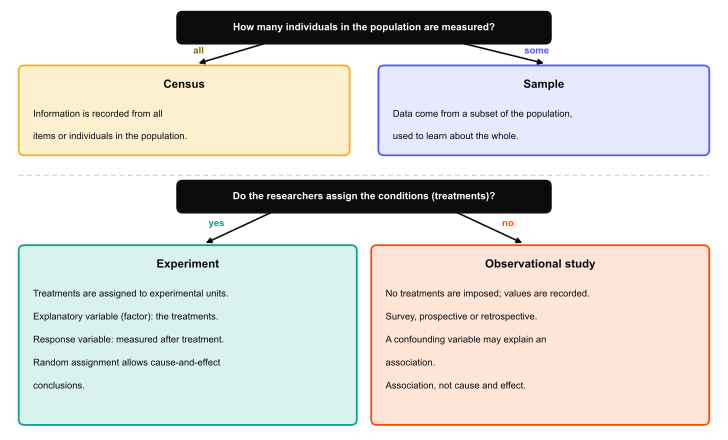
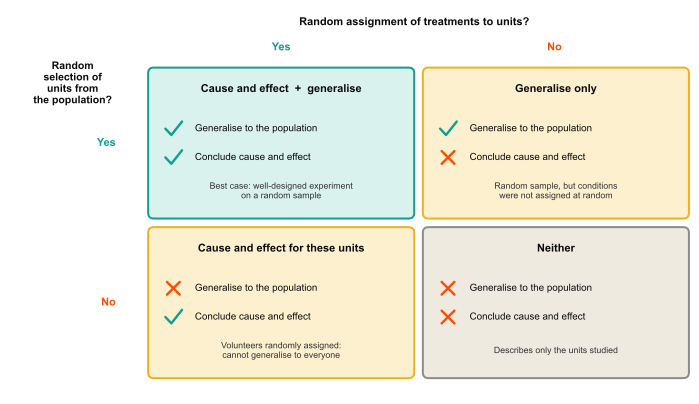
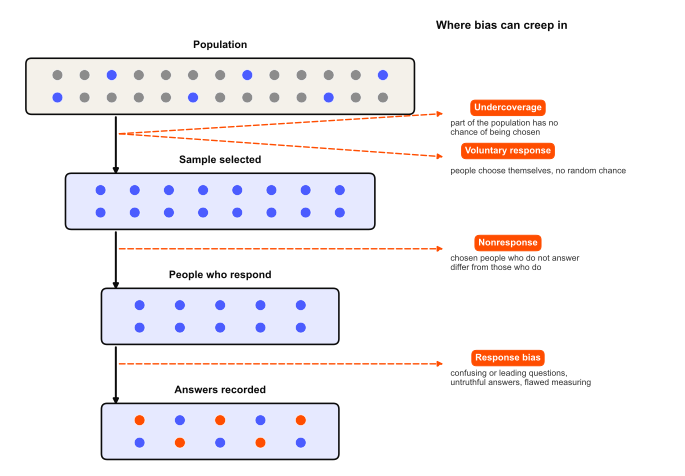

Introducing statistics: what can we learn from data
Taught in: Lesson 1.A.1 · Populations, Samples, & Data

- 1.1.A.1A statistical study is a study in which data are collected from a sample to answer an investigative question about a larger population.
- 1.1.A.2Statistical studies are necessary when the population is too large or it is too difficult to collect data from every item or individual in the population.
- 1.1.A.3A datum (singular form of data) is a piece of information about an item or individual. A collection of data is called a data set.
- 1.1.A.4A population consists of all items or individuals of interest. The population size is represented by the symbol N.
- 1.1.A.5A sample selected for study is a subset of the population from which data are obtained. The number of items in the sample, called the sample size, is represented by the symbol n.
- 1.1.A.6Each component of a statistical study and the resulting calculations can be related to an aspect of the corresponding real-world context from which the components were derived. This identification of a statistical result with the corresponding contextual component is what is meant by “in context.”
- 1.1.B.1An investigative question for a specific study should have a defined purpose and should not be changed based on the data analysis or results.
- 1.1.B.2An investigative question should be posed so that the required data can be collected and analyzed.
Variables
Taught in: Lesson 1.A.1 · Populations, Samples, & Data


- 1.2.A.1An observational unit is an item or individual from which a datum is collected.
- 1.2.A.2A variable is a characteristic that may change from one observational unit to another.
- 1.2.A.3Data collected on numerical and categorical variables measured on observational units, including photographs, sounds, videos, and text, can convey meaningful information.
- 1.2.A.4A parameter is a numerical attribute or summary of the variable of interest for a population.
- 1.2.A.5A statistic is a numerical attribute or summary of the variable of interest for a sample. The value of a statistic from a certain sample is often not equal to the unknown value of the population parameter but may provide the basis for making inferences about the population parameter.
- 1.2.B.1A categorical variable, also called a qualitative variable, takes on values that are category names or group labels.
- 1.2.B.2A quantitative variable, also called a numerical variable, takes on numerical values for a measured or counted quantity and generally has units of measure.
- 1.2.C.1A discrete quantitative variable can take on a countable number of values. The number of values may be finite or countably infinite, as with the whole numbers.
- 1.2.C.2A continuous quantitative variable can take on an infinite number of possible values within a given interval. The number of values the variable can take on is measurable but not countable. This variable can take on all possible values between any pair of values.
Tabular representation and summary statistics for one categorical variable
Taught in: Lesson 1.A.2 · Describing a Categorical Variable

- 1.3.A.1A frequency table shows the number of observational units in each category of a categorical variable.
- 1.3.A.2A relative frequency table shows the proportion of observational units in each category of a categorical variable.
- 1.3.B.1Percentages, relative frequencies, and ratios all provide the same information as proportions.
- 1.3.B.2Counts and relative frequencies of categorical variables reveal information that can be used to justify claims about the variables in context.
Graphical representations for one categorical variable
Taught in: Lesson 1.A.2 · Describing a Categorical Variable


- 1.4.A.1Bar charts, also called bar graphs, display frequencies (counts) or relative frequencies (proportions) for the categories of a single categorical variable. Each bar on a bar chart represents a category of the categorical variable of interest. The height or length of each bar corresponds to the frequency or relative frequency of the observational units in each category.
- 1.4.A.2Pie charts are used to display frequencies (counts) or relative frequencies (proportions) for categorical data. Each slice on a pie chart represents a category of the categorical variable of interest. The area of each slice, as a fraction of the total area, corresponds to the relative frequency of observational units falling within each category. The sum of the slices’ areas together will equal 1, or 100% of the total area.
- 1.4.B.1Graphical representations of a categorical variable reveal information that can be used to justify claims about the variable in context.
- 1.4.C.1Frequency and relative frequency tables, bar charts, and pie charts can be used to compare two or more data sets in terms of the same categorical variable.
Graphical representations for one quantitative variable
Taught in: Lesson 1.A.3 · Describing a Quantitative Variable

- 1.5.A.1Histograms, stem-and-leaf plots, and dotplots provide a visual representation of the distribution of the values of a quantitative variable. These graphs show the frequency or relative frequency of the quantitative variable values or intervals of values and maintain the natural ordering, smallest to largest, of the quantitative variable.
- 1.5.A.2A histogram places the observed values of the quantitative variable into ordered intervals, or bins, along the horizontal axis. Each bar represents an interval or bin, and the height of each bar shows the frequency or relative frequency of the observations within that interval. Altering the interval widths, or bin widths, can change the appearance of the histogram. Alternatively, a histogram can be constructed with bins on the vertical axis with bars appearing horizontally.
- 1.5.A.3A stem-and-leaf plot splits each value of the quantitative variable into two parts: a “stem” (the first digit or digits) and a “leaf” (usually the single digit after the stem digit or digits). Both stems and leaves are ordered from smallest to largest.
- 1.5.A.4A dotplot represents each value of the quantitative variable by a dot. Each dot is placed above the horizontal or beside the vertical axis corresponding to the value of that observation, with nearly identical values stacked on top of each other.
Descriptions for one quantitative variable distributions
Taught in: Lesson 1.A.3 · Describing a Quantitative Variable


- 1.6.A.1Descriptions of the distribution of one quantitative variable include shape, center, and variability (spread) as well as any unusual features such as outliers, gaps, or clusters in context.
- 1.6.A.2The shape of the distribution of one quantitative variable is skewed to the right (positively skewed) if the right tail (toward larger values) is longer than the left. The shape of the distribution is skewed to the left (negatively skewed) if the left tail (toward smaller values) is longer than the right. The shape of the distribution is approximately symmetric if the left half is approximately the mirror image of the right half.
- 1.6.A.3Distributions of one quantitative variable with one main peak are called unimodal. Distributions with two prominent peaks are called bimodal. A distribution in which each frequency or each relative frequency is approximately the same with no prominent peaks is approximately uniform.
- 1.6.A.4Outliers for one quantitative variable are data points that are unusually small or large relative to the rest of the data.
- 1.6.A.5A gap is a region in a distribution between two values in which there are no observed data.
- 1.6.A.6Clusters are concentrations of values usually separated by gaps.
- 1.6.B.1Graphical representations of a quantitative variable may reveal information that can be used to justify claims about the variable in context.
Summary statistics for one quantitative variable (center, spread, outliers)
Taught in: Lesson 1.A.4 · Measures of Center & Spread, Lesson 1.A.5 · Boxplots, Outliers, & Resistance


- 1.7.A.1Two commonly used measures of center in the distribution of a quantitative variable are the mean and median.
- 1.7.A.2
![1.7.A.2]()
- 1.7.A.3The median is the middle value when the data set is ordered from smallest to largest and can be found with and without using technology. One common method for determining the median of a data set with an even number of values is to use the mean of the two middle values. A common method for determining the median of a data set with an odd number of values is to use the value in the middle of all the values.
- 1.7.A.4In an ordered data set, the smallest value is the minimum value, and the largest value is the maximum value.
- 1.7.A.5The first quartile, denoted by Q1, is the median value of the lower half of the ordered data set from the minimum value to the position of the median. Approximately 25% of the values in the data set are less than or equal to Q1. The third quartile, denoted by Q3, is the median value of the upper half of the ordered data set from the position of the median to the maximum value. Approximately 75% of the values in the data set are less than or equal to Q3. The second quartile, Q2, is also the median of the data set. Q1 and Q3 form the boundaries for the middle 50% of values in an ordered data set.
- 1.7.A.6The pth percentile is the value that has p% of the data less than or equal to it when the data set is ordered from smallest to largest. The first and third quartiles are the 25th and 75th percentiles, respectively.
- 1.7.B.1Three commonly used measures of variability (or spread) in the distribution of a quantitative variable are the range, interquartile range, and standard deviation.
- 1.7.B.2The range is the difference between the maximum data value and the minimum data value.
- 1.7.B.3The interquartile range (IQR) is the difference between the third and first quartiles: Q3 − Q1.
- 1.7.B.4
![1.7.B.4]()
- 1.7.C.1Changing units of measurement affects the values of the calculated statistics.
- 1.7.D.1There are many methods for determining potential outliers. Two methods frequently used are as follows: 1.7.D.1.i An outlier is a value located more than 1.5 × IQR above the third quartile or more than 1.5 × IQR below the first quartile. 1.7.D.1.ii An outlier is a value located more than 2 standard deviations above, or below, the mean.
- 1.7.E.1Summary statistics can be used to compare features of two or more independent samples, including center, variability, shape, and outliers.
- 1.7.F.1The median and IQR are considered a resistant (or robust) measure of center and measure of variability, respectively, because outliers do not greatly (if at all) affect their values. Because outliers can affect their values greatly, the mean is considered a nonresistant (or non-robust) measure of center, and the range and standard deviation are considered nonresistant (or non- robust) measures of variability.
- 1.7.F.2Summary statistics of a quantitative variable may reveal information that can be used to justify claims about the variable in context.
Graphical representations of summary statistics
Taught in: Lesson 1.A.5 · Boxplots, Outliers, & Resistance


- 1.8.A.1A five-number summary is made up of the minimum data value, the first quartile (Q1), the median, the third quartile (Q3), and the maximum data value.
- 1.8.A.2A boxplot is a graphical representation of the five-number summary (minimum, first quartile, median, third quartile, maximum). The box represents the middle 50% of data, with a line at the median and the ends of the box corresponding to the quartiles. Lines (“whiskers”) that represent 25% of the data extend from the first quartile to the minimum and from the third quartile to the maximum. If there are outliers in the data, the whiskers extend to the most extreme data values that are not outliers, and outliers are usually denoted with an asterisk or other symbol.
- 1.8.B.1If a distribution is relatively symmetric, then the values of the mean and median are relatively close to each other. If a distribution is skewed right, then the value of the mean is usually larger than the median. If the distribution is skewed left, then the value of the mean is usually smaller than the median.
Comparisons of the distributions for one quantitative variable
Taught in: Lesson 1.A.6 · Comparing Graphs & Z-Scores


- 1.9.A.1Graphical representations of a quantitative variable can be used to compare important features between two or more distributions of the same quantitative variable. Histograms, back-to-back stem-and-leaf plots, and dotplots may be used to compare center, variability, shape, outliers, clusters, or gaps in two or more distributions. Boxplots may be used to compare center, variability, outliers, and skewness (or symmetry).
- 1.9.B.1A comparison of graphical representations for two or more distributions can include any of the numerical summaries (e.g., mean, standard deviation, etc.).
- 1.9.C.1Multiple quantitative one-variable graphical representations may reveal information that can be used to justify claims about the variable in context.
- 1.9.D.1A standardized score measures the number of standard deviations a data value falls above or below the mean.
- 1.9.D.2
![1.9.D.2]()
- 1.9.E.1z-scores may be used to compare relative positions of individual values within a distribution or between distributions.
The investigative question revisited and data collection
Taught in: Lesson 1.B.1 · Types of Studies


- 1.10.A.1The first component of an investigative question should guide the data collection process and should be phrased in terms of the variable(s) of interest in the study.
- 1.10.A.2The second component of an investigative question should guide the data analysis choice. 1.10.A.2.i In the case of a hypothesis test, the investigative question should make clear the parameter and the direction of the alternative hypothesis (i.e., not equal, greater than, less than, association, not independent). 1.10.A.2.ii In the case of a confidence interval, the investigative question should make clear the parameter and the goal of estimation of that parameter within a range of potential values.
- 1.10.A.3The third component of an investigative question should indicate the type(s) of conclusion(s) applicable from the study. The investigative question should provide the population to which the conclusions will be applicable and, in the case of an experiment that uses random assignment, a cause-and-effect conclusion.
- 1.10.B.1A census consists of recording information from all items or individuals in a population.
- 1.10.C.1An experiment is a study in which a researcher assigns conditions, or treatments, to experimental units to explore an investigative question of interest about the population.
- 1.10.C.2The experimental unit is the observational unit to which the treatment is assigned. When experimental units consist of people, they are sometimes referred to as subjects or participants.
- 1.10.C.3An explanatory variable, or factor, is a variable whose different categories, or levels, are imposed on the experimental units. The different categories, or levels, of the explanatory variable are called treatments. When there is more than one explanatory variable, the combinations of the categories, or levels, of the explanatory variables are called treatments.
- 1.10.C.4A response variable is an outcome measured on each experimental unit after the treatment has been administered.
- 1.10.D.1An observational study is a study where treatments are not imposed. The researcher records the values of the variables of interest in order to explore an investigative question of interest.
- 1.10.D.2A prospective study is one in which the observational units of study are selected at a point in time, and data are gathered both at that time and into the future.
- 1.10.D.3A retrospective study is one in which the observational units of study are selected at a point in time and data from the past are gathered.
- 1.10.D.4A survey is an observational study in which the data are collected from humans using a standard set of questions.
- 1.10.D.5A confounding variable in an observational study provides an alternative explanation for the observed relationship between the explanatory and response variables determined in the study, thereby reducing the possibility of concluding a causal relationship between the explanatory and response variables of interest. To be a confounding variable, a variable must be associated with both the explanatory variable and the response variable.
- 1.10.E.1A sample is considered random when all observational units in the sample are selected from the population using some type of random mechanism, such as a random number generator.
- 1.10.E.2When observational units, or experimental units, in a sample are randomly selected from a population, it is appropriate to make generalizations about the entire population of individuals from which the sample was selected.
- 1.10.E.3A sample is not randomly selected when observational units are deliberately chosen or volunteer themselves to be in the sample.
- 1.10.E.4When observational units, or experimental units, in a sample are not randomly selected from a population, it is appropriate to make generalizations only about a population of individuals that are similar to those used in the study.
Random sampling
Taught in: Lesson 1.B.2 · Random Sampling

- 1.11.A.1Sampling without replacement is a sampling strategy in which an observational unit from a population can be selected only once. The observational unit is not returned to the population before subsequent selections of observational units are made, so there is no chance that the observational unit can be selected again.
- 1.11.A.2Sampling with replacement is a sampling strategy in which an observational unit from the population can be selected more than once. The observational unit is returned to the population before subsequent selections of observational units are made, so it is possible that the observational unit could be selected again.
- 1.11.A.3In a simple random sample (SRS) of size n, every sample of the size n has the same chance of being selected. This method is the basis for many types of sampling mechanisms. There are several procedures to obtain a simple random sample; for example, using a random number generator or randomly selecting numbered slips of paper.
- 1.11.A.4A stratified random sample involves the division of all individuals in a population into non-overlapping groups, called strata, based on one or more shared attributes or characteristics (homogeneous grouping). Within each stratum a simple random sample is selected, and the selected individuals are combined to form one sample.
- 1.11.A.5A cluster random sample involves the division of a population into smaller groups, called clusters. Ideally, each cluster mirrors the heterogeneity of the population, with clusters similar to one another. A simple random sample of clusters is selected from the population to form the sample of clusters. Data are collected from all observational units in each of the selected clusters.
- 1.11.A.6A systematic random sample is a method in which sample members from a population are selected according to a random starting point and a fixed, periodic interval between successive sampling units.
- 1.11.B.1Each random sampling method has different characteristics that make it more appropriate for sampling populations depending on the question being investigated.
Potential problems with sampling
Taught in: Lesson 1.B.3 · Bias & Nonrandom Sampling


- 1.12.A.1Bias in a sampling method is a systematic error in the sampling procedure that results in a statistic being consistently larger or consistently smaller than the parameter the statistic is used to estimate.
- 1.12.A.2Voluntary response bias is a bias that may occur when a sample consists entirely of volunteers.
- 1.12.A.3Undercoverage bias may occur when the sampling method fails to include part of the population or a part of the population is less likely to be selected based on the sampling method.
- 1.12.A.4Nonresponse bias may occur because of a failure to obtain responses from some individuals chosen to be sampled. The respondents and nonrespondents could differ significantly in ways that are important for the study.
- 1.12.A.5Response bias may occur when responses to a survey or measurements of observational units tend to differ from the “true” value in one direction. Examples include questions that are confusing or leading (question wording bias) or self-reported responses.
- 1.12.A.6Nonrandom sampling methods (e.g., samples chosen by convenience or voluntary response) introduce potential bias because they do not use random chance to select the individuals.
Experimental design (part A)
Taught in: Lesson 1.B.4 · Experimental Design, Lesson 1.B.5 · Grouping in Experiments


- 1.13.A.1A well-designed experiment should include the following: 1.13.A.1.i Comparisons of at least two treatment groups, one of which could be a control group 1.13.A.1.ii Random assignment of treatments to experimental units 1.13.A.1.iii Replication 1.13.A.1.iv Direct control of potential extraneous sources of variation in the response
- 1.13.A.2A control group is a collection of experimental units that are created for comparison. A control group may be given a treatment different from the treatment of interest to determine if the treatment of interest has an effect (e.g., a treatment with an inactive substance, a placebo, may be given).
- 1.13.A.3The placebo effect is the difference between the average response to a placebo and the average response to no treatment.
- 1.13.A.4In a single-blind, also called single-masked, experiment, participants do not know which treatment they are receiving, but members of the research team who interact with them know which treatment each participant is receiving, or vice versa.
- 1.13.A.5In a double-blind, also called double-masked, experiment, neither the participants nor the members of the research team who interact with them know which treatment each participant is receiving.
- 1.13.A.6An extraneous source of variation, also referred to as an extraneous variable, is a variable that is known (or believed) to affect the response but is not an explanatory variable being studied.
- 1.13.A.7The purpose of random assignment is to create treatment groups that are as similar as possible with respect to extraneous sources of variation. If random assignment is successful, the respective distributions of each extraneous variable will be approximately the same for all the treatment groups.
- 1.13.A.8A confounding variable in an experiment is a variable that is related to the explanatory variable in such a way that it is difficult to determine which variable, explanatory or confounding, is influencing the change in the response variable. However, in a well-designed experiment, the potential for confounding variables is reduced.
- 1.13.A.9Replication within an experiment means more than one experimental unit is assigned to each treatment.
- 1.13.A.10Direct control in an experiment means keeping the settings of certain potential extraneous sources of variation in the response variable the same from experimental unit to experimental unit.
- 1.13.B.1In a completely randomized design, treatments are assigned to experimental units completely at random. Often the number of experimental units assigned to each treatment will be the same, but the sample sizes in each treatment do not have to be the same.
- 1.13.B.2A blocking variable is a source of extraneous variation in the response variable. In a randomized block design, the experimental units are first grouped according to similar values of a blocking variable. These groups are called blocks. Units within the same block are homogeneous with respect to the blocking variable. After the blocks are formed, the treatments are randomly assigned to experimental units within each block so that all treatments occur within every block.
- 1.13.B.3The purpose of blocking is to separate the variation in the response caused by the blocking variable from the rest of the extraneous variation in the response. Blocking allows for more precise comparisons of the response across the treatments. Within a block, the treatments can be compared without having to worry about variation in the response caused by changes in the blocking variable.
- 1.13.B.4A matched pairs design is a randomized block design with only two treatments. Experimental units are arranged in pairs by matching on one or more extraneous sources of variation in the response variable. Each pair receives both treatments by randomly assigning one treatment to one member of the pair and the other treatment to the second member of the pair. Alternatively, each experimental unit may get both treatments while the order of the treatments is randomized.
- 1.13.C.1One experimental design may be more appropriate than another experimental design based on the goals of the investigative study, the characteristics of the population, and the sample and variables involved.
- 1.13.D.1Using random assignment of treatments to experimental units allows for cause-and-effect conclusions between the explanatory and the response variables because the potential for confounding variables is reduced.
- 1.13.D.2Depending on the experimental unit, it may be unethical or difficult to randomly select experimental units to participate in an experiment. In that case, the study’s experimental units are obtained from volunteers and will represent the population of experimental units similar to those who participated in the study.